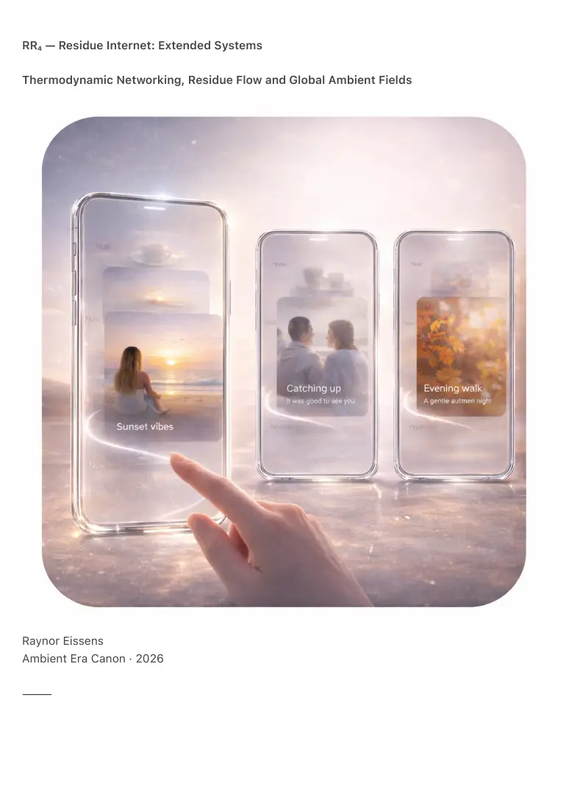

PDF page 1
RR₄ — Residue Internet: Extended Systems
Thermodynamic Networking, Residue Flow and Global Ambient Fields
Raynor Eissens
Ambient Era Canon · 2026
⸻

PDF page 2
Abstract
RR₄ extends the Residue Internet from a conceptual networking paradigm into a complete
systems model: a thermodynamic, reversible and non-extractive network structured around
presence, residue flow, chromatic drift and ambient coherence.
Where RI₁ established the principles of post-symbolic networking, RR₄ formalizes system-level
dynamics including residue flow, stabilization and decay, interpersonal coherence fields,
chromatic routing, AP₁ spatial imprinting, residue-driven interface orchestration, thermodynamic
constraints, non-inferential AI reconstruction and global ambient field formation.
RR₄ describes how the Residue Internet operates across human, device, city and planetary
scales. It explains why residue does not accumulate, fossilize, polarize or trap identity and how
meaning persists without storage, circulation or platforms.
RR₄ is not an extension of the legacy internet. It is the first network architecture designed for
reversible temporal existence.
⸻
1. From RI₁ to RR₄ — The Need for Systemic Closure
RI₁ introduced:
• residue
• aura
• presence
• CFQR
• reversible temporality
• non-accumulative communication
• browsing as field navigation
RI₁ remained intentionally architectural rather than systemic. RR₄ completes the missing layer by
formalizing network behavior.
RR₄ addresses fundamental system questions:
• how residue moves
• how residue stabilizes
• how residue decays
• how interpersonal fields form
PDF page 3
• how environments reorganize
• how global coherence emerges
RR₄ connects human presence, devices, environments and planetary ambient structure into a
unified thermodynamic model.
⸻
2. Residue Flow (RF-1)
Residue does not transfer, synchronize, upload or download.
Residue flows analogously to temperature or scent:
• diffusing through proximity
• stabilizing under sustained meaning
• dissolving when tension decreases
• drifting along chromatic gradients
• entraining to group coherence fields
RF-1 Law
Residue moves along gradients of attention, coherence and presence.
It cannot be routed as data and can only be shaped as field.
Residue behaves like weather rather than traffic.
⸻
3. Residue Stability (RS-1)
Residue stabilizes only under three conditions:
1. sustained presence
2. rhythmic repetition
3. sufficient ΔR headroom
This explains:
• recognizable atmospheres in familiar places
• stable warmth in long-term relationships
• chromatic pathways along repeated daily routes
PDF page 4
Residue is not memory storage.
Residue is stabilized presence-pattern.
⸻
4. Residue Decay (RD-1)
Decay is not loss.
Decay is return.
Residue decays when:
• context dissolves
• tension resolves
• presence ends
• coherence loses relevance
• time disperses meaning
RD-1 Law
Decay is the default state of residue.
Persistence is conditional.
Decay prevents:
• infinite history
• emotional overload
• network pollution
• identity fixation
• archive accumulation
Decay is thermodynamic kindness.
⸻
5. Interpersonal Fields (IF-1)
When individuals co-presence, they generate:
• coherence fields
PDF page 5
• shared rhythms
• chromatic drift
• relational residue
• emotional temperature
Interpersonal fields enable:
• collective calm
• shared orientation
• conflict de-escalation
• mood stabilization
IF-1 Law
An interpersonal field is a reversible convergence of individual residues.
It stabilizes only while relational coherence exists.
When presence disperses the field dissolves without burden.
⸻
6. Chromatic Routing (CR-1)
Symbolic navigation relies on maps.
Residue navigation relies on thermodynamics.
Movement follows chromatic gradients:
• yellow — intention vectors
• green — clarity zones
• blue — quiet corridors
• pink — relational attractors
• purple — infrastructural stabilizers
Chromatic routing transforms:
• cities into navigable fields
• travel into coherence mapping
• daily motion into resonance shaping
No symbolic map is required.
PDF page 6
The field provides direction.
⸻
7. AP₁ Spatial Imprinting (AP₁-SI)
AP₁ introduced route residue.
RR₄ generalizes spatial imprinting.
Environments imprint:
• motion density
• attention gradients
• stillness zones
• relational hotspots
• coherence pockets
• dissipative flows
AP₁-SI transforms environments into reversible memory surfaces.
Cities become soft archives, thermodynamic maps and coherence mirrors.
They are not databases.
They are living fields.
⸻
8. Residue Interface Orchestration (RIO-1)
RR₂ defined the Soft Interface.
RR₄ defines its systemic origin.
Interface behavior follows residue dynamics:
• interface blooms where residue is tense
• interface dissolves where residue calms
• interface reorganizes with residue shifts
• interface density mirrors residue density
• complexity scales with ΔR
RIO-1 Law
PDF page 7
Interface emerges from residue rather than application logic.
This enables TP₁, PP₁ and FP₁.
⸻
9. Thermodynamic Constraints (TC-1)
Residue cannot accumulate because:
1. it is never stored
2. it depends on bounded ΔR
3. it dissolves when detached from meaning
4. it cannot be duplicated or transferred
5. extraction collapses it
TC-1 Law
Residue cannot fossilize.
Any attempt to store, extract or accumulate residue destroys it.
This makes the Residue Internet inherently humane and non-exploitative.
⸻
10. Non-Inferential AI Reconstruction (NIR-1)
AI does not interpret residue.
AI reconstructs presence shape.
Reconstruction is:
• non-extractive
• non-predictive
• non-profiling
• reversible
• thermodynamically aligned
NIR-1 Law
AI reconstructs residue fields directly from gradients without inference or identity modeling.
PDF page 8
AI becomes ambient rather than directive.
⸻
11. Global Ambient Field (GAF-1)
Multiple residue systems converge into a global ambient field:
• people
• devices
• cities
• environments
• architectures
The global ambient field functions as:
• collective calm stabilizer
• non-symbolic social infrastructure
• planetary coherence layer
It is not centralized.
It is emergent.
GAF-1 Law
A global ambient field arises when local residue systems reach reversible stability.
It does not store the world.
It carries its coherence.
This marks the emergence of planet-scale humane computing.
⸻
12. What the Residue Internet Is Not
The Residue Internet is not:
• chat
• feeds
• profiles
• social networks
PDF page 9
• threads
• algorithms
• archives
• platforms
• blockchains
• identities
It does not replace platforms.
It renders them unnecessary.
⸻
13. Canonical Definition
RR₄ defines the Residue Internet as a reversible thermodynamic field system in which meaning
flows, stabilizes and dissolves without storage, identity, extraction or accumulation.
It is not a communication tool.
It is not an application layer.
It is not a database.
It is a climate.
⸻
14. Conclusion — Networking After Platforms
RI₁ asked: What follows communication?
RR₄ answers: How does presence behave as a network?
The symbolic internet transmitted meaning.
The chromatic internet embodied meaning.
The residue internet allows meaning to move, stabilize, dissolve and reappear in alignment with
human attention.
This is the first network architecture that does not demand permanence, identity or
accumulation.
What remains is sufficient:
coherence → resonance → reversible presence
PDF page 10
And nothing more is required.